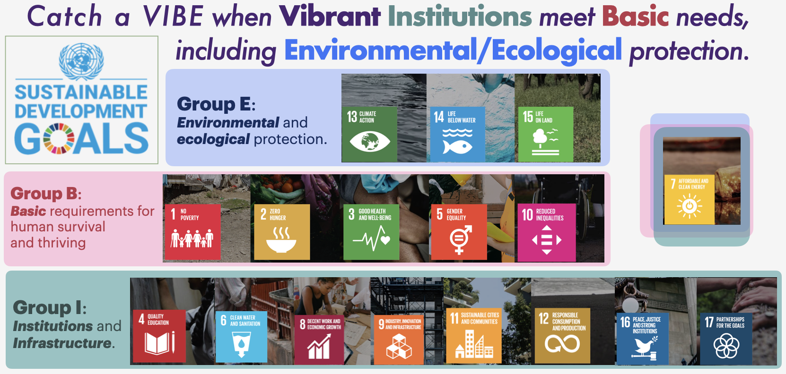
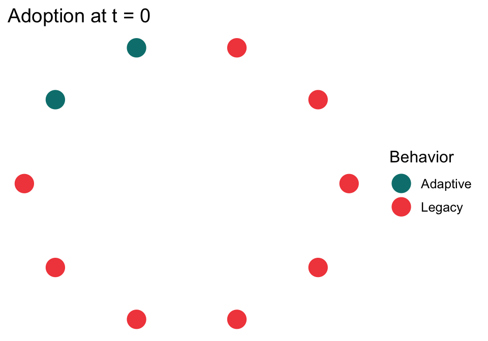
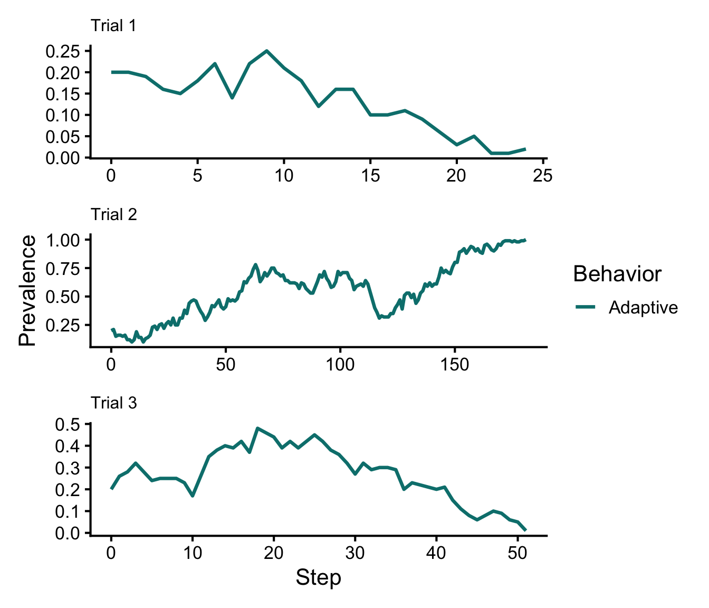

# Uncomment and install if you don't already have this.
# remotes::install_github("SocSci-for-Sustainability/socmod")
# Load other required libraries1 Introduction
- Freedom to choose based on one’s self-interest is a hallmark of justice and equality.
- Choosing based on what others do, i.e., conformity, might align with one’s self-interest but it does not in general.
- In social science for sustainabiltiy we have to know whether one is superior to the other.
1.1 Sustainability

1.2 Representation of the cultural process
2 Prevalence Dynamics
The prevalence dynamic is a way to express change in the prevalence of the adaptive practice at each time step.
2.1 Dynamical systems
2.1.1 The prevalence dynamic equation
- \(a\) is the prevalence of the adaptive behavior, \(A\)
- \(\frac{da}{dt}\) is the derivative of \(a\) with respect to time, \(t\)
- \(\dot a\) is a shorthand notation for \(\frac{da}{dt}\) introduced by Newton
- \(p_A\) is the total probability that a random individual, \(i\), will either adopt or keep the adaptive behavior \(A\)
- We also use notation \(p_A = P(A)\)
- This can be expanded into the probability that an \(L\)-doer
adopts \(A\) on the next time step, written \(P(A | L)\), and the probability that \(A\)-doer keeps doing \(A\) on the next time step, written \(P(A | A)\).
\[ \frac{da}{dt}= \dot a= p_A - a \]
2.2 Agent-based model
Load required libraries. Use the RStudio tool to install any libraries you are missing.
library(socmod)
library(ggplot2)
library(dplyr)To start we need to initialize our model and the agents using make_abm and initialize_agents from socmod. We specify that there are ten agents and no network structure by explicitly providing an empty graph (no edges) with ten nodes to the graph named argument.
We set two agents to be in the seed set who receive “direct instruction”, i.e., we set the behaviors of two randomly-chosen agents to be “Adaptive”. “Adaptive” and “Legacy” are the two default values for agent behaviors, so there is no need to specify these. The initial_prevalence passed to initialize_agents is implicitly the initial prevalence of the adaptive behavior.
# Initialize the ABM and agents
abm <-
make_abm(graph = igraph::make_empty_graph(10)) |>
initialize_agents(initial_prevalence = 0.2)
# Inspect the initialization to ensure 2 of 10 are A-doers
plot_network_adoption(
abm, layout = igraph::in_circle(),
plot_mod = \(p) p + ggtitle("Adoption at t = 0")
)
2.2.1 Conformity model dynamics
conformity_dynamics <- make_model_dynamics(
# Partner selection is not necessary in conformity
partner_selection = \(focal_agent, model) {},
# Conformity interaction is not partner-based, so use dummy arg
interaction = \(focal_agent, ., model) {
# Observe behaviors of randomly-chosen demonstrators
behaviors_sample <- sample(model$agent_behaviors,
model$n_demonstrators)
# Count how many of each behavior is present
behaviors_table <- table(behaviors_sample)
print(behaviors_table)
# Sample behavior to copy, weighted by frequency; names are behaviors
next_behavior <- sample(names(behaviors_table), 1, behaviors_table)
# Only need to set next behavior, payoffs irrelevant w/ conformity
focal_agent$set_next_behavior(next_behavior)
},
# Use the learning model stepper that makes "next" behavior/payoff "current"
model_step = learning_model_step
)Let’s define the agent-based model again, this time with more agents. We will also run a single trial and plot observations of the simulated prevalence dynamics.
When I do little experiments like this I set up single cells that can run an entire model setup and simulation trial. Then I keep running it to see what changes.
source("R/model.R")
t1 <- single_conformity_trial(n_agents = 100, n_demonstrators = 3)
t2 <- single_conformity_trial(n_agents = 100, n_demonstrators = 3)
t3 <- single_conformity_trial(n_agents = 100, n_demonstrators = 3)library(patchwork)
# Plot prevalence dynamics of Adaptive behavior only
p1 <- plot_prevalence(t1, tracked_behaviors = c("Adaptive")) + ggtitle("Trial 1") + theme(plot.title = element_text(size = 12))Warning: Removed non-summary-safe metadata: agent_behaviorsp2 <- plot_prevalence(t2, tracked_behaviors = c("Adaptive")) + ggtitle("Trial 2") + theme(plot.title = element_text(size = 12))Warning: Removed non-summary-safe metadata: agent_behaviorsp3 <- plot_prevalence(t3, tracked_behaviors = c("Adaptive")) + ggtitle("Trial 3") + theme(plot.title = element_text(size = 12))Warning: Removed non-summary-safe metadata: agent_behaviors(p1 / p2 / p3) +
plot_layout(guides = "collect", axes = "collect") 
Conformity dynamics with different initial \(a\)
2.2.2 Success-biased model dynamics
- We define “success” here as the fitness of one’s behavior. Learners are biased towards teachers who are more successful in success-biased learning.
- This means we need to implement partner selection, which samples some number of demonstrators, then samples one randomly, weighted by payoff.
- Interaction is simple in this model: we assume perfect learning, i.e., the learner always adopts its chosen teacher’s behavior